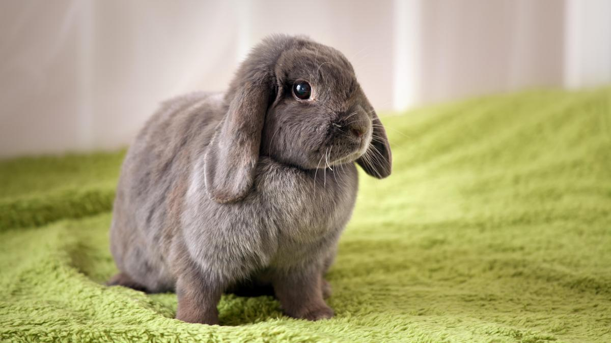

Nuestros otros animalitos para Adoptar!

Bella
Bella es una conejita tranquila y curiosa, le encanta explorar su entorno y disfrutar de largas siestas al sol.

Rocky
Rocky es un periquito juguetón y vocal, siempre llenando su hogar con sus trinos y buscando interacción con su familia humana.
Whiskers
Whiskers es un hámster activo y curioso, siempre corriendo en su rueda y explorando cada rincón de su jaula en busca de aventuras.

Mittens
Mittens es un conejo cariñoso y curioso, siempre dispuesto a recibir caricias y explorar su entorno con sus largas orejas alertas.